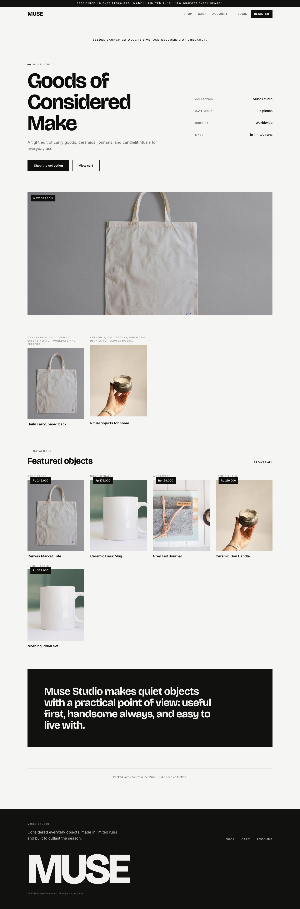
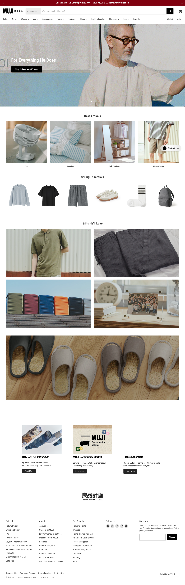
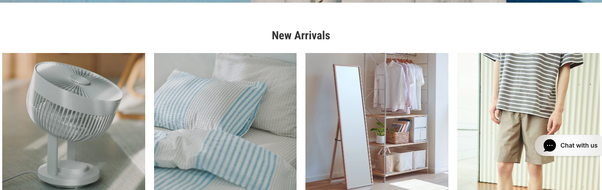
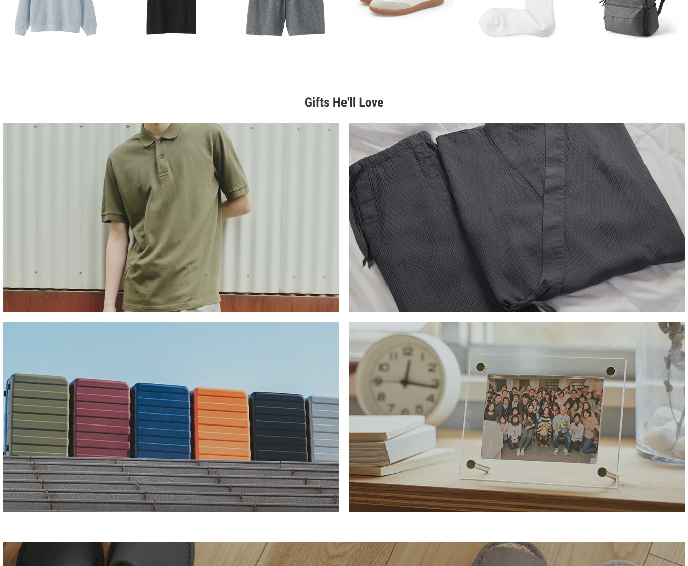
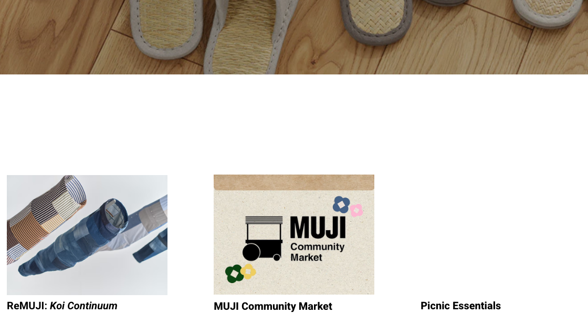
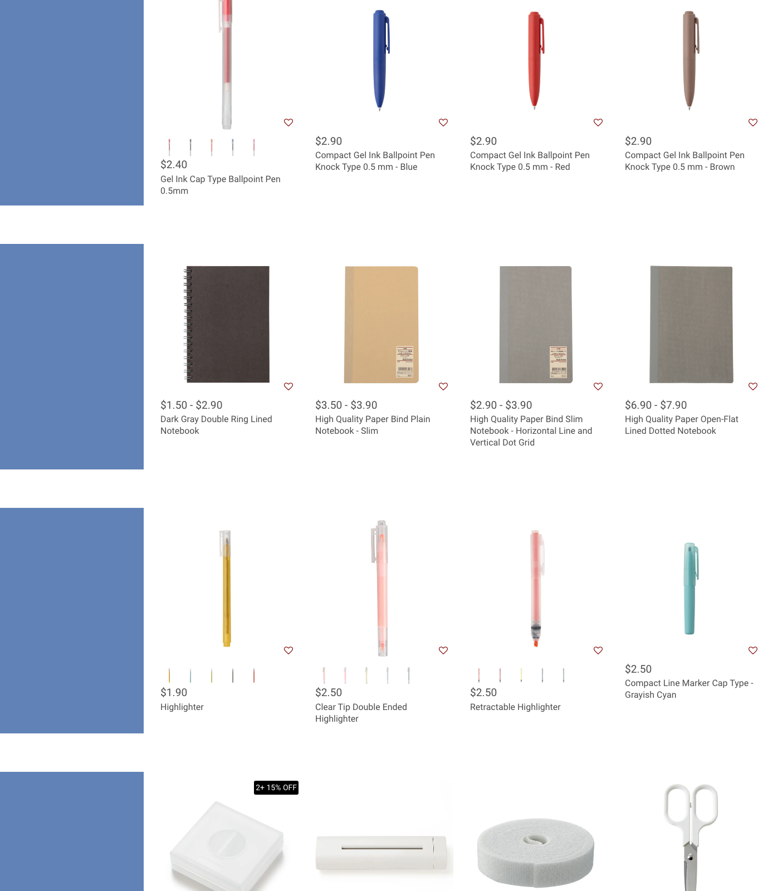

Home Requirement
Convert the current home page from a high-contrast brand/editorial landing page into a simple commerce homepage: hero promo, category entries, seasonal product rows, editorial tiles, and practical links. It should feel quiet, useful, and browsable.
Keep src/routes/index.tsx focused on data loading and
composition. Extract home sections into small components instead of
expanding the route file.
Current Page And MUJI Reference

Differences To Resolve
| Area | Current MUSE | Reference behavior | Required MUSE change |
|---|---|---|---|
| First viewport | Text-first brand statement with large display type. | Image-first promo with short title and button. | Use a full-width promo image/module with small overlay and direct CTA. |
| Meta column | Collection, catalogue, shipping, made stats. | No decorative stats; browsing starts quickly. | Remove MetaRow from home or move facts into service footer. |
| Product discovery | One featured product grid after banners. | Multiple category, seasonal, and editorial modules. | Add category rail, seasonal product row, editorial grid, and story cards. |
| Imagery | Single large product/lifestyle hero and black label. | Light, product-specific, useful, mostly white or neutral backgrounds. | Use category/product images without dark overlays unless needed for legibility. |
| About section | Large black brand band. | Brand story is secondary and practical. | Replace with small editorial/story cards or service info; no huge black band. |
| Mobile | Home stacks but still carries large display hierarchy. | Mobile shows compact header, product image, then controls/content quickly. | Reduce heading sizes and keep category/product modules immediately visible. |
Component Requirements With Crops
HomeHeroPromo
Full-width image promo with short title, one CTA, optional slide dots, and restrained overlay.
- Already have
homepageContent.title, subtitle, CTA, hero image.- Get rid
- Oversized text-first hero and meta column.
- Need
- Image-first layout, small overlay, responsive focal positioning.

CategoryRail
Small category tiles near the top of home, using square image, short label, and link.
- Already have
- Category names via product/category data in catalog queries.
- Get rid
- Text-only category chips as the only category affordance.
- Need
- Home category image data or reuse banner/media content.
SeasonalProductRow
A compact row for new arrivals, seasonal products, or featured objects.
- Already have
featuredProductsand route-localProductCard.- Get rid
- Heavy card styling and large gaps.
- Need
- Shared
StorefrontProductCardused by home and catalog.

EditorialFeatureGrid
Large useful image tiles for seasonal stories or gift guides, not abstract brand copy.
- Already have
homepageBannerswith title, body, href, image.- Get rid
- Banner cards with strong current MUSE treatment.
- Need
- Grid layout with mixed tile sizes and minimal captions.

StoryCardRow
Small editorial/news cards for community updates, guides, or collection notes.
- Already have
- Footer/about copy only.
- Get rid
- Large
about-bandas the main brand story. - Need
- Optional story card data or map existing banners into this pattern.

StorefrontProductCard
Shared quiet product card: image, price, product name, category/status, optional favorite affordance.
- Already have
- Route-local
ProductCardon home and cards in catalog. - Get rid
- Duplicated card markup and current price-tag visual signature.
- Need
- One shared component with square image and compact text scale.
Current Components Inventory
| Current piece | Status | Action |
|---|---|---|
Home route |
Keep | Keep data loading and composition. Move visual blocks to components. |
MetaRow |
Remove from home | Not needed in first viewport. Service facts can live in footer or small service strip. |
ProductCard |
Extract/restyle | Promote to shared storefront product card for home and catalog. |
banner-grid, banner-card |
Restyle | Use as editorial feature grid with light captions and mixed image sizes. |
about-band, footer-band |
Remove/replace | Replace with smaller story cards and practical service/footer content. |
LoadingState |
Keep/restyle | Use lighter skeleton-like states matching product grid density. |
Data And Build Notes
Data We Have
homepageContent, hero image, CTA, banners, featured products, site settings.
Data We Need
Image-backed home categories, optional story cards, and optional module ordering from admin content.
Simple First Pass
Reuse homepageBanners for editorial/story modules and featuredProducts for product rows before adding schema.